Chapter 9 Univariate stationary processes
library(tsibble)
library(tsibbledata)
library(fable)
library(feasts)
library(lubridate)
library(pins)
library(slider)
library(patchwork)9.1 Stationarity
Given a stochastic process (a data generating process), \(y_1, y_2, \dots, y_T\), the real numbers called time series \(y_1^{(1)}, y_2^{(1)}, \cdots, y_T^{(1)}\) is just an set of observed value, or a realization of the process.It is obvious, however, that there is not just one realisation of such a process, but, in principle, an arbitrary number of realisations which all have the same statistical properties as they all result from the same data generating process.
In the following, a time series is considered as one realisation of the underlying stochastic process. We can also regard the stochastic process as the entirety of all of its possible realisations. To make the notation as simple as possible, we will not distinguish between the process itself and itsrealisation. This can be taken out of the context.
We can define a strict-sense stationarity of a time series to be :
\[ \begin{aligned} F_Y(y_{t_1+\alpha}, y_{t_2+\alpha}, \dots, y_{t_n+\alpha}) = F_Y(y_{t_1+}, y_{t_2}, \dots, y_{t_n}) \end{aligned} \] Where \(F_Y(*)\) stands for the multivariate distribution of a specific window of that time series. This basically means the distribution stays the same stays same when you pick a window on that time series and then make a shift \(\alpha\).In the most intuitive sense, stationarity means that the statistical properties of a process generating a time series do not change over time.
However, strict-sense stationarity are rarely practical or helpful in most cases. For this reason we place more emphasis on weak or wide-sense stationarity. A stochastic process is weak stationary if \(\forall k\) we have:
\[ \begin{aligned} \text{mean stationarity}: \text{E}(y_t) &= \mu_t = \mu\\ \text{variance stationarity}:\text{Var}(y_t) &= \sigma_t^2 = \sigma^2 \\ \text{covariance stationarity}: \text{Cov}(y_t, y_s) &= \text{E}(y_t - \mu)(y_s - \mu) = f(|s-t|) \end{aligned} \]
(covariance stationarity means that covariance is only a function of the distance \(|s-t|\), but not related to point \(t\)).
Because we only assume this kind of stationarity in the following, we will mostly drop the adjective weak.
As variance stationarity immediately results from covariance stationarity for \(s = t\), a stochastic process is weakly stationary when it is mean and covariance stationary.
We can also refer to a time series to be stationary if the underlying stochastic process is stationary. So for a stationary time series, what do we expect to see?
- No trend and seasonality (constant mean, local compared to global)
- No sharp rise and fall (constant variance, local compared to global)
Why is this important? First, because stationary processes are easier to analyze. Without a formal definition for processes generating time series data, it is already clear that stationary processes are a sub-class of a wider family of possible models of reality. This sub-class is much easier to model and investigate. The above informal definition also hints that such processes should be possible to predict, as the way they change is predictable.
Although it sounds a bit streetlight effect-ish that simpler theories or models should become more prominent, it is actually quite a common pattern in science, and for good reason. In many cases simple models can be surprisingly useful, either as building blocks in constructing more elaborate ones, or as helpful approximations to complex phenomena. As it turns out, this also true for stationary processes.
Due to these properties, stationarity has become a common assumption for many practices and tools in time series analysis. These include trend estimation, forecasting and causal inference, among others.
9.1.1 White noise
White noise is first introduced in Section 5.4.1. As it turns out, the stochastic process behind a white noise is called a pure random process or simply white noise process. Such a process satisfies \(\text{E}(y_t) = 0\), \(\text{Var}(y_t) = \sigma^2\) and \(\forall k \not= 0, \text{Cov}(y_t, y_{t+k}) = 0\).
Apparently, white noise is generated by a special case of stationary process. Notably it should have contant mean 0, constant variance \(\sigma^2\) and no autocorrelation.
9.1.2 Tests for autocorrelation and normality
In Section 5.4.3 we mentioned statistical tests to decide whether there is no significant correlation among residuals. And here are some details.
First, it is important to know that white noise, like all stationary time series, has some nice consistent estimators to estimate its mean, variance and covariance:
\[ \begin{aligned} \hat{\mu} &= \frac{1}{T}\sum_{t=1}^{T}y_t \\ \hat{\gamma}(0) = \hat{\sigma^2} &= \frac{1}{T}\sum_{t=1}^{T}(y_t - \hat{\mu})^2 \\ \hat{\gamma}(k) = \hat{\text{Cov}}(y_t, y_{t+k}) &= \frac{1}{T}\sum_{t=1}^{T-k}{(y_t - \hat{\mu})(y_{t+k} - \hat{\mu})} \quad k = 1, 2, 3, \dots \end{aligned} \]
We can also get the consistent estimator of autocorrelation coefficient:
\[ r_k = \frac{\sum_{t=1}^{T-k} = {(y_t - \hat{\mu})(y_{t+k} - \hat{\mu})}}{\sum_{t=1}^{T}(y_t - \hat{\mu})^2} = \frac{\hat{\gamma}(k)}{\hat{\gamma}(0)} \]
For white noise processes, its variance can be approximated by \(1/T\) and is asymptotically normally distributed. Due to this, pointwise \(95\) percent confidence intervals of \(\pm1.96 /\sqrt{T}\) ? are often indicated for the estimated autocorrelation coefficients.
In order to evaluate estimated time series models, it is important to know whether the residuals of the model really have the properties of a pure random process, in particular, whether they are uncorrelated. Thus, the null hypothesis to be tested is the first \(h\) \(r_k\) is zero:
\[ H_0: r_1 = r_2 = \cdots = r_h, h<T \] The first possibility to check this is to apply the 95 percent confidence limits \(\pm2/\sqrt{T}\) valid under the null hypothesis to every estimated correlation coefficient. Under \(H_0\) at most 5 percent of autocorrelation coefficients may lie outside these limits.
To make a global statement, i.e. to test the common hypothesis whether a given number of \(h\) autocorrelation coefficients are zero altogether, GEORGE E.P. BOX and DAVID A. PIERCE (1970) have developed the following test statistic:
\[ Q = T \sum_{k = 1}^{h}{r^2_k} \]
Under the null hypothesis it is asymptotically \(\chi^2\) distributed with \(h - K\) degrees of freedom, \(K\) being the number of estimated parameters. It is suggested that use \(h = 10\) for non-seasonal data and \(h = 2m\) for seasonal data, where \(m\) is the period of seasonality.
As – strictly applied – the distribution of this test statistic holds only asymptotically (under large sample), GRETA M. LJUNG and GEORGE E.P. BOX (1978) proposed the following modification for small samples, known as the ljung-box test
\[ Q^* = T(T + 2)\sum_{k = 1}^{h}{(T-K)^{-1}}r_k^2 \] \(Q^*\) is also asymptotically \(\chi^2\) distributed with \(m - k\) degrees of freedom,
An alternative to these testing procedures is the Breusch-Godfrey test (BG test), also known asa the Lagrange-Multiplier Test (LM Test) developed by TREVOR S. BREUSCH (1978) and LESLIE G. GODFREY (1978). Like for the \(Q\) (\(Q^*\)) test the null hypothesis is which is tested against the alternative that the residuals follow an autoregressive or a moving average process of order h. The test can be performed with an auxiliary regression. The estimated residuals are regressed on the explanatory variables of the main model and on the lagged residuals, up to order h. The test statistic which is \(\chi^2\) distributed with h degrees of freedom is given by \(TR^2\) the auxiliary regression, with T being the number of observations. Alternatively, an \(F\) test can be used for testing the combined significance of the lagged residuals in the auxiliary regression.
The Breusch-Godfrey test is similar to the Ljung-Box test, but it is specifically designed for use with regression models.
Compared to the Durbin-Watson test which is used in traditional econometrics for testing autocorrelation of the residuals of an estimated model, the \(Q\), \(Q^*\) as well as the BG test have two major advantages: firstly, they can check for autocorrelation of any order, and not only one order at a time. Secondly, the results are also correct if there are lagged endogenous variables in the regression equation, whereas in such cases the results of the Durbin-Watson test are biased in favour of the null hypothesis.
As mentioned in Section 5.4.1, we often assume normally distributed white noise. But the fact that the residuals are not autocorrelated does not imply that they are stochastic independence if the variauted, as the usual testing procedures are based on this aspecially the third (skewness) and fourth moments (kurtosis) are important (0 and 3 respectively based on normality hypothesis).
\[ \begin{aligned} \text{skewness}: \hat{S} &= \frac{1}{T}\frac{\sum_{t = 1}^{T}{(x_i - \mu)^3}}{\hat{\gamma}(0)^{3/2}} \\ \text{kurtosis}: \hat{K} &= \frac{1}{T}\frac{\sum_{t = 1}^{T}{(x_i - \mu)^4}}{\hat{\gamma}(0)^{2}} \end{aligned} \]
Using the skewness S and the kurtosis K, CARLOS M. JARQUE and A NIL K. BERA (1980) proposed a test for normality. It can be applied directly on the time series itself (or on its differences). Usually, however, it is applied to check estimated regression residuals. The test statistic
\[ \text{JB} = \frac{T}{6}[\hat{S}^2 + \frac{1}{4}(\hat{K} - 3)^2] \] is \(\chi^2\) distributed with 2 degrees of freedom. T is again the sample size. The hypothesis that the variable is normally distributed is rejected whenever the values of the test statistic are larger than the corresponding critical values.
# use arima.sim() to stimulate a AR(1) process
# list specification for AR(1) model with phi = 0.5, and the std dev of the Gaussian errors to be 0.5
AR_spec <- list(order = c(1, 0, 0), ar = 0.9, sd = 0.1)
AR1 <- arima.sim(n = 50, model = AR_spec)
AR1_aug <- AR1 %>%
as_tsibble() %>%
model(ARIMA(value ~ PDQ(1, 0, 0))) %>%
augment()
# box pierce test, non-seasonal data h = 10
AR1_aug %>% features(.resid, box_pierce, lag = 10, dof = 0)
#> # A tibble: 1 x 3
#> .model bp_stat bp_pvalue
#> <chr> <dbl> <dbl>
#> 1 ARIMA(value ~ PDQ(1, 0, 0)) 4.08 0.944
# ljung box test
AR1_aug %>% features(.resid, ljung_box, lag = 10, dof = 0)
#> # A tibble: 1 x 3
#> .model lb_stat lb_pvalue
#> <chr> <dbl> <dbl>
#> 1 ARIMA(value ~ PDQ(1, 0, 0)) 5.01 0.890
# Breusch Godfrey test: lmtest::bgtest()
# durbin watson test
AR1_aug %>% pull(.resid) %>% car::durbinWatsonTest(max.lag = 10)
#> [1] 1.892617 1.987601 1.948205 1.773167 2.037944 1.857135 1.832362 1.445376
#> [9] 1.114101 1.588983
# jb test (normality)
AR1_aug %>% pull(.resid) %>% normtest::jb.norm.test()
#>
#> Jarque-Bera test for normality
#>
#> data: .
#> JB = 6.5604, p-value = 0.0289.1.3 The Wold Decomposition
The Wold Decomposition is a general property that all stationary process share. Actually it exists for every covariance stationary, purely non-deterministic stochastic process: After subtracting the mean function, each of such processes can be represented by a linear combination of a series of uncorrelated random variables with zero mean and constant variance, which are the errors made in forecasting \(y\) t on the basis of a linear function of lagged \(y\)(i.e., the RHS of a MA(\(\infty\)) model after subtracting the constant term).
Purely non-deterministic means that all additive deterministic components of a time series have to be subtracted in advance. By using its own lagged values, any deterministic component can be perfectly predicted in advance. This holds, for example, for a constant mean, as well as for periodic, polynomial, or exponential series in t. Thus, one can write (see proof in Seciton 9.4.3):
\[\begin{equation} \tag{9.1} y_t - \mu_t = \sum_{i-0}^{\infty}\psi_i\varepsilon_i \end{equation}\]
where \(\varepsilon_t\) is white noise and \(\psi_i\) satisfy \(\sum_{i-0}^{\infty}\psi_i^2 < \infty\). The quadratic convergence of the series of the \(\psi_i\) guarantees the existence of second moments of the process \(y_t\). There is no need of any distributional assumption for this decomposition to hold. Especially, there is no need of the \(\varepsilon_t\) to be independent, it is sufficient that they are (linearly) uncorrelated.
From Wold Decomposition we can derive \(y_t\) has properties as follows:
\[ \begin{aligned} \text{E}(y_t) &= \mu_t \\ \text{Var}(y_t) = \text{E}[(y_t - \mu_t)^2] &= E[(\varepsilon_t + \psi_1\varepsilon_{t-1} + ...)^2] = \sigma^2\sum_{i=0}^{\infty}\psi_i^2 \\ \end{aligned} \] And as for variance: \[ \begin{split} \text{Cov}(y_t, y_{t+k}) &= \text{E}[(y_t - \mu_t)(y_{t+k} - \mu_{t+k})] \\ &= \text{E}[(\varepsilon_t + \psi_1\varepsilon_{t-1} + \cdots + \psi_k\varepsilon_{t-k} + \psi_{k+1}\varepsilon_{t-k-1}) * (\varepsilon_{t+k} + \psi_1\varepsilon_{t+k-1} + \cdots + \psi_{k}\varepsilon_t) + \psi_{k+1}\varepsilon_{t-1})] \\ \end{split} \] We know that for \(i \not= j, \text{E}(\varepsilon_i\varepsilon_j) = \text{Cov}(\varepsilon_i, \varepsilon_j) = 0\) and \(\text{E}(\varepsilon_i^2) = \text{Var}(\varepsilon_i^2) = \sigma^2\), so the result can be simplfied as :
\[ \begin{split} \text{Cov}(y_t, y_{t+k}) &= \sigma^2(1 ·\psi_k + \psi_1\psi_{k+1} + \psi_{2}\psi_{k+2} + \cdots) \\ &= \sigma^2\sum_{i=0}^{\infty}{\psi_i\psi_{k+i}} \end{split} \] This derivation matches where we started, that \(y_t\) is a covariance stationary stochastic process(and by extension variance stationary), since its variance and covariance function is not related to \(t\).
All stationary models discussed in the following chapters can be represented on the basis of the Wold Decomposition (9.1). However, this representation is, above all, interesting for theoretical reasons: in practice, applications of models with an infinite number of parameters are hardly useful.
9.2 Backshift notation
The backward shift operator \(B\) (or \(L\) in some references) is a useful notational device when working with time series lags:
\[ By_t = y_{t-1} \]
\(B\) can be treated as a number in arithmetic.Two applications of \(B\) to \(y_t\) shifts the data back two periods:
\[ B(By_t) = B^2y_t \]
The backward shift operator is convenient for describing the process of differencing. A first difference can be written as
\[ y'_t = y_t - y_{t-1} = y_t - By_{y-1} = (1 - B)y_t \] Similarly, the second-order difference would be
\[ \begin{split} y_t'' &= (y_t - y_{t-1}) - (y_{t-1} - y_{t - 2}) \\ &= By_t - 2By_{t} + B^2y_t \\ &= (1-B)^2y_t \end{split} \]
In general, a \(d\)th-order difference can be written as
\[ (1 - B)^dy_t \]
Backshift notation is particularly useful when combining differences, as the operator can be treated using ordinary algebraic rules. In particular, terms involving \(B\) can be multiplied together.
For example, a seasonal difference followed by a first difference can be written as
\[ \begin{split} (1 - B)(1 - B^m) &= (1 - B^m - B + B^{m + 1})y_t \\ &= y_t - y_{t-m} - y_{t-1} + y_{t-m-1} \end{split} \]
9.3 Autoregressive models
In an autoregression model, we forecast the variable of interest using a linear combination of past values of the variable. The term autoregression indicates that it is a regression of the variable against itself. Thus, an autoregressive model of order \(p\) can be written as
\[ y_t = c + \phi_1 y_{t-1} + \phi_2 y_{t-2} + \dots + \phi_p y_{t-p} + \varepsilon_t \]
where \(\varepsilon_t\) is white noise. We refer to this model as AR(p) model, a autoregressive model with order \(p\)
We can write out an AR(p) model using the backshift operator:
\[ \begin{aligned} y_t - \phi_1y_{t-1} - \phi_2y_{t-2} - \cdots - \phi_py_{t-p} &= \varepsilon_t + c\\ (1 - \phi_1B - \phi_2B^2 - \cdots - \phi_pB^p)y_t &= \varepsilon_t + c\\ \phi_p(B)y_t &= \varepsilon_t + c \end{aligned} \]
Whether autoregressive process is stationary is dependent on the values of \(\phi_1, \phi_2, \dots\). To yield a stationary autoregressive process, some constraints on the values of the parameters are required.
For an AR(1) model: \(-1 < \phi_1 < -1\) (Consider the denominator of the sum of a inifite geometric series)
For an AR(2) model: \(-1 < \phi_2 < 1\), \(\phi_1 + \phi_2 < 1, \phi_2 - \phi_1 < 1\).
Generally, for a AR(p) model, if we treat B as number (or numbers), we can write out the the formula (\(\phi_p(B)\) below) as
\[ \begin{aligned} \phi_p(B)y_t &= \varepsilon_t + c\\ &\Downarrow \\ \phi_p(B) &= 0 \end{aligned} \] To be stationary, all complex roots (\(B_1\), \(B_2\), …, \(B_p\)) of the characteristic equation \(\Phi(B) = 1 - \phi_1B - \phi_2B^2 - \cdots - \phi_pB^p\) must exceed 1 in absolute value (actually all of them should lie ouside of the unit circle). We can thus derive conditions on the valuse of \(\phi_1, \cdots, \phi_p\), but it’s quite complicated, and R takes care of these restrictions when estimating a model.
For example, consider this AR(1) model :
\[ \begin{aligned} y_t &= 0.5y_{t-1} + \varepsilon_t \\ y_t - 0.5y_{t-1} &= \varepsilon_t \\ (1 - 0.5B)y_t &= \varepsilon_t \\ &\Downarrow \\ 1 - 0.5B &= 0 \\ B &= 2 \end{aligned} \] This model is indeed stationary because \(|B| > 1\). From this we can also derive \(|\phi_1| < 1\) for AR(1) model.
9.3.1 Stimulating an AR(p) process
set.seed(2020)
# specification for AR(1) model with small coef
AR_small_spec <- list(order = c(1, 0, 0), ar = 0.1, sd = 0.1)
# specification for AR(1) model with large coef
AR_large_spec <- list(order = c(1, 0, 0), ar = 0.9, sd = 0.1)
## simulate AR(1)
AR1_small <- arima.sim(n = 50, model = AR_small_spec) %>% as_tsibble()
AR1_large <- arima.sim(n = 50, model = AR_large_spec) %>% as_tsibble()
wrap_plots(
autoplot(AR1_small) + ggtitle(expression(paste(phi, " = 0.1"))),
autoplot(AR1_large) + ggtitle(expression(paste(phi, " = 0.9"))),
ACF(AR1_small) %>% autoplot() + ggtitle(expression(paste(phi, " = 0.1"))),
ACF(AR1_large) %>% autoplot() + ggtitle(expression(paste(phi, " = 0.9")))
)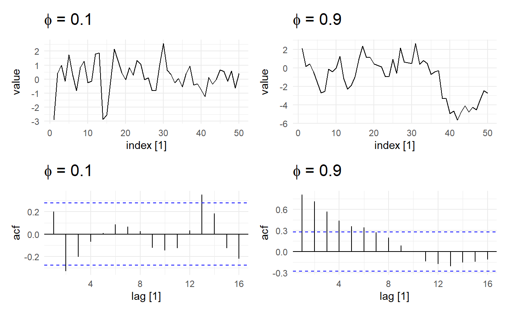
It looks like the time series with the smaller AR coefficient is more “choppy” and seems to stay closer to 0 whereas the time series with the larger AR coefficient appears to wander around more. Remember that as the coefficient in an AR(1) model goes to 0, the model approaches a WN sequence, which is stationary in both the mean and variance. As the coefficient goes to 1, however, the model approaches a random walk (9.3.3), which is not stationary in either the mean or covariance.
Next, let’s generate two AR(1) models that have the same magnitude coeficient, but opposite signs, and compare their behavior.
set.seed(2020)
# specification for AR(1) model with positive coef
AR_pos_spec <- list(order = c(1, 0, 0), ar = 0.5, sd = 0.1)
# specification for AR(1) model with negative coef
AR_neg_spec <- list(order = c(1, 0, 0), ar = -0.5, sd = 0.1)
# simulate AR(1)
AR1_pos <- arima.sim(n = 50, model = AR_pos_spec) %>% as_tsibble()
AR1_neg <- arima.sim(n = 50, model = AR_neg_spec) %>% as_tsibble()
wrap_plots(
autoplot(AR1_pos) + ggtitle(expression(paste(phi, " = 0.5"))),
autoplot(AR1_neg) + ggtitle(expression(paste(phi, " = -0.5"))),
ACF(AR1_pos) %>% autoplot() + ggtitle(expression(paste(phi, " = 0.5"))),
ACF(AR1_neg) %>% autoplot() + ggtitle(expression(paste(phi, " = -0.5")))
)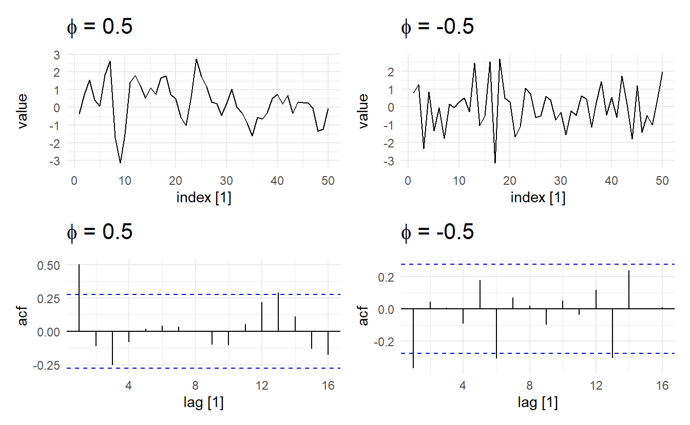
Now it appears like both time series vary around the mean by about the same amount, but the model with the negative coefficient produces a much more “sawtooth” time series. It turns out that any AR(1) model with \(−1 < \phi_1 < 0\) will exhibit the 2-point oscillation we see here.
We can simulate higher order AR(p) models in the same manner, but care must be exercised when choosing a set of coefficients that result in a stationary model or else arima.sim() will fail and report an error. For example, an AR(2) model with both coefficients equal to 0.5 is not stationary, and therefore this function call will not work:
9.3.2 Decision of order p
How do we decide the order $p $of a AR model? A rule of thumb is to look at partial autocorrelation coefficients, PACF. PACF measures the direct effect of a lagged value on its previous value. Suppose we want to measure the effect of \(y_{t-2}\) on \(y_{t}\), while \(r_2\) could be high, it could also carry the effect of \(y_{t-2} \rightarrow y_{t-1} \rightarrow y_t\), especially when \(r_1\) is also high. This is when partial autocorrelation come to resuce, consider a AR(2) process (which means past values earlier than \(y_{t-2}\) cannot have an effect on \(y_t\))
\[ y_t = c + \phi_1 y_{t-1} + \phi_2 y_{t-2} + \varepsilon_t \]
The partial correlation coefficient for \(y_{t-k}\) is simply defined as \(\phi_k\) in the model, i.e., \(\phi_1\) for \(y_{t-1}\) and \(\phi_2\) for \(y_{t-2}\). Partial correlation coefficient for \(k > 2\) is think of as zero. In practice, there are more efficient algorithms for computing \(\phi_k\) than fitting all of these autoregressions, but they give the same results.
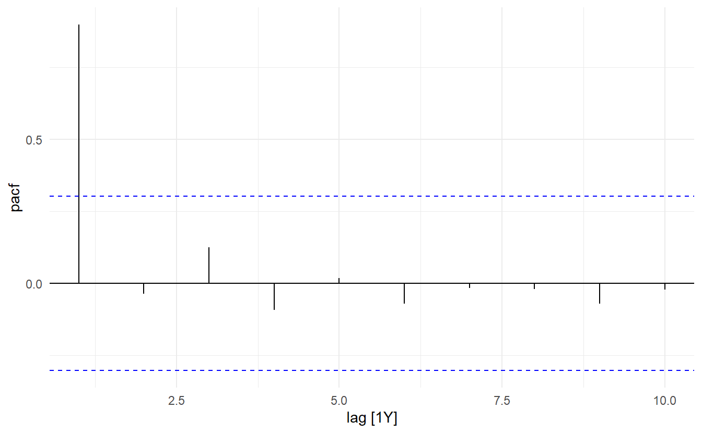
This tells us only PAC at \(\text{lag} = 1\) is significantly different than 0. As such only among \(y_{t-1}, y_{t-2}, \dots, y_{t-10}\), only \(y_{t-1}\) has a significant direct effect on the response, so a AR(1) model may be appropriate. We can compare this to the ACF plot
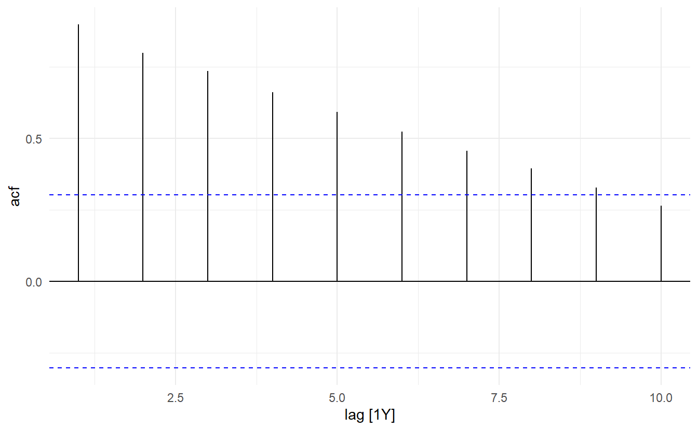
Another characteristic of AR(p) is that ACF plots tails slowly.
# model with larger phi has longer tail
wrap_plots(
ACF(AR1_small) %>% autoplot() + ggtitle(expression(paste(phi, " = 0.1"))),
ACF(AR1_large) %>% autoplot() + ggtitle(expression(paste(phi, " = 0.9"))),
nrow = 2
)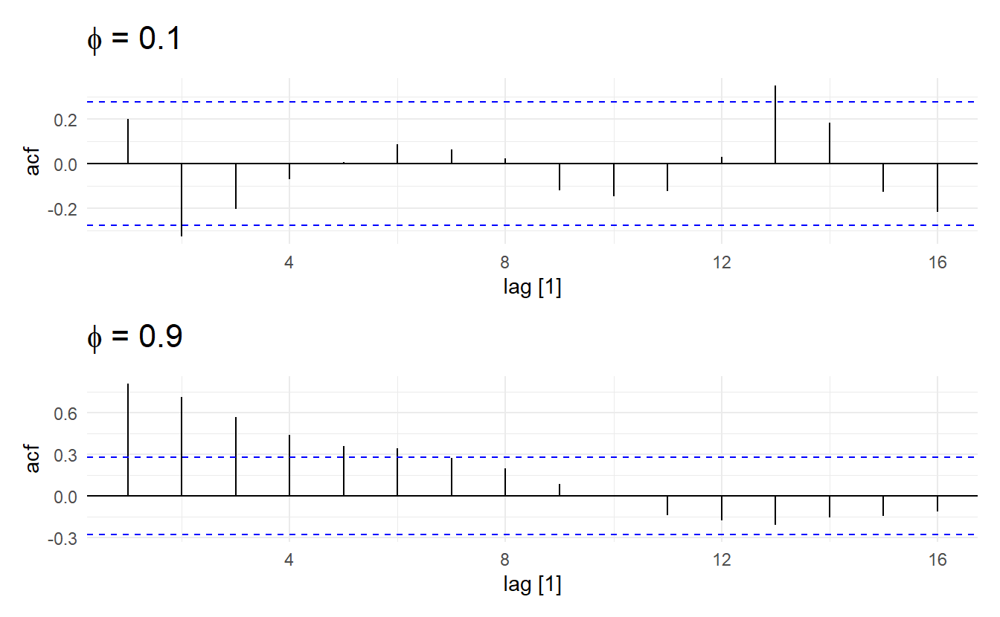
Further illustration: the ACF for an AR(p) process tails off toward zero very slowly, but the PACF goes to zero for lags > \(p\).
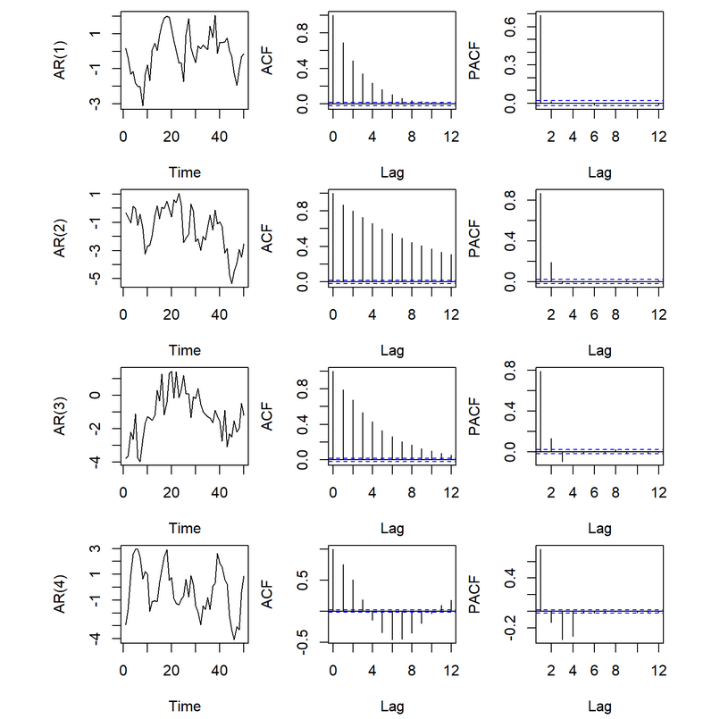
9.3.3 Random walk
Random walk is a special case of autoregressive process, namely AR(1). A time series is a random walk if
\[ y_t = \begin{cases} \varepsilon_1 &t = 1 \\ y_{t - 1} + \varepsilon_t& t = 2, 3, \dots \end{cases} \] where \(\varepsilon_t\) comes from a white noise process. It can also be expressed in the following form:
\[ y_t = \sum_{i=1}^{t}{\varepsilon_t} \]
According to this, we also have (covariance can be viewed as autocorrelation in this sense)
\[ \text{mean}: \text{E}(y_t) = 0 \\ \text{variance}: \text{Var}(y_t) = t\sigma^2 \\ \text{ACF}: r_k(t) = \frac{t\sigma^2}{\sqrt{t\sigma^2(t+k)\sigma^2}} \]
Note that a random walk process has changable variance and a ACF not only related to the distance, meaning that it is not statinary(since \(\phi_1 = 1 \not<|1|\)). In other words, it does not satisfy variance stationarity and covariance stationarity. This non-stationary process is often suitable fro describing economic phenomena.
Random walk can be extended by adding a drift \(\mu\), which would be the new expectation of the process. Random walk with a drift (also called a biased random walk) is the process behind a drift model
\[ \begin{split} y_t &= \mu + y_{t-1} + \varepsilon_t \\ &= \mu + \mu + y_{t-2} + \varepsilon_t + \varepsilon_{t-1}\\ \vdots \\ &= t\mu + \sum_{i=1}^{t}\varepsilon_i \end{split} \]
With little effort, we can show that for a drift process \(\text{E}(y_t) = \mu\), \(\text{Var}(y_t) = t\sigma^2\), and ACF stays the same, so that a biased random walk is still non-stationary. A random walk with drift can be considered as a curve fluctuating around line \(y = \mu t\) with increasing volatility as \(t\) increases.
# stimulate a random walk with drift
RW <- function(N, x0, mu, variance) {
z<-cumsum(rnorm(n = N,
mean = 0,
sd=sqrt(variance)))
t <- 1:N
x <- x0 + t*mu+z
x
}
# mu is the drift
set.seed(2020)
rw <- RW(500, 0, 1, 1) %>%
enframe() %>%
as_tsibble(index = name)
rw %>% autoplot() + geom_abline(slope = 1, intercept = 0, color = "red")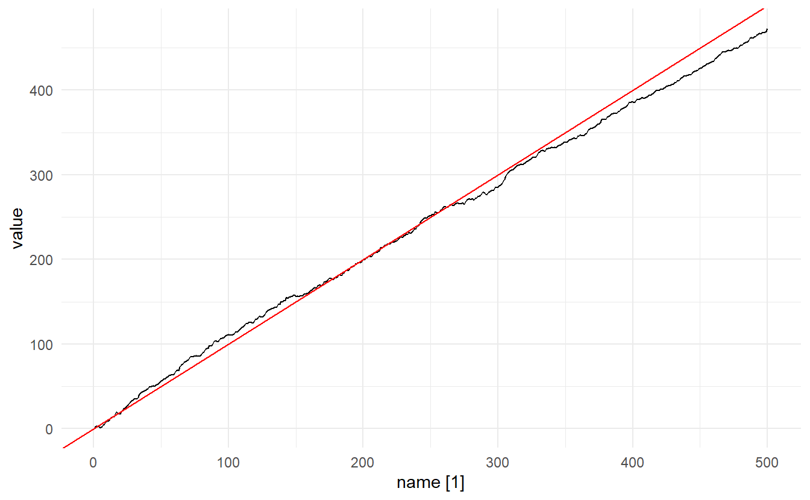
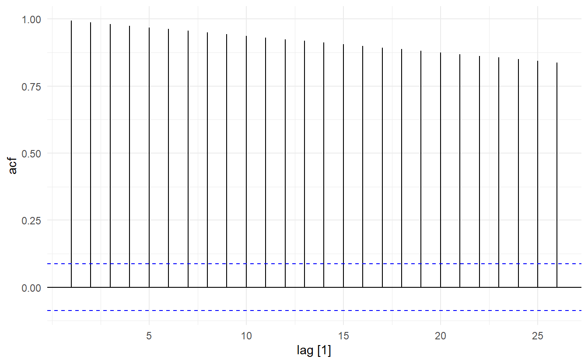
9.4 Moving average models
Rather than using past values of the forecast variable in a regression, a moving average model uses past forecast errors in a regression-like model.2
\[ y_t = c + \theta_1\varepsilon_{t-1} + \theta_2\varepsilon_{t-2} + \dots + \theta_q\varepsilon_{t-q} + \varepsilon_{t} \]
where \(\varepsilon_t\) is white noise. We refer to this as a MA(q) model, a moving average model of order \(q\). Of course, we do not observe the values of \(\varepsilon_t\), so it is not really a regression in the usual sense.
Notice that each value of \(y_t\) can be thought of as a weighted moving average of the past few forecast errors. However, moving average models should not be confused with the moving average smoothing we discussed in Section 3.2. A moving average model is used for forecasting future values, while moving average smoothing is used for estimating the trend-cycle of past values.
It is easy to show MA(q) process is always stationary. A MA(1) process has the following properties
\[ \begin{aligned} \text{Mean stationarity}: \text{E}(y_t) &= c \\ \text{Variance stationarity}:\text{Var}(y_t) &= (1 + \theta_1^2)\sigma^2 \\ \text{Covariance stationarity}:\text{ACF} = \gamma(k) &= \begin{cases} \frac{\theta_1}{1 + \theta_1^2} & k = 1\\ 0 & \text{otherwise} \end{cases} \end{aligned} \]
Proof for ACF : \[ \begin{split} \frac{\gamma(1)}{\gamma(0)} &= \frac{\text{Covariance for lag} 1}{\text{variance for lag}1} \\ &= \frac{E[(y_t - E(y_t))(y_{t-1} - E(y_{t-1}))]}{(1 + \theta_1^2)\sigma^2} \\ &= \frac{E[(\varepsilon_{t} + \theta_1\varepsilon_{t-1})(\varepsilon_{t-1} + \theta_1\varepsilon_{t-2})]}{(1 + \theta_1^2)\sigma^2} \\ &= \frac{E(\varepsilon_t \varepsilon_{t-1} + \theta_1\varepsilon_t\varepsilon_{t-2} + \theta_1 \varepsilon_{t-1}^2 + \theta_1^2\varepsilon_{t-1}\varepsilon_{t-2})}{(1 + \theta_1^2)\sigma^2} \\ &= \frac{\theta_1E(\varepsilon_{t-1}^2)}{(1 + \theta_1^2)\sigma^2} \\ &= \frac{\theta_1\sigma^2}{(1 + \theta_1^2)\sigma^2} \\ &= \frac{\theta_1}{1 + \theta_1^2} \end{split} \] For \(\text{lag} > 1\), there will be no square term like \(\varepsilon_{t-k}^2\), but only cross terms like \(\varepsilon_t\varepsilon_{t-k}\)，whose expectation would be zero by defination, so that ACF will be zero, which leads to covariance stationarity.
9.4.1 Simulating an MA(q) process
We can simulate MA(q) processes just as we did for AR(p) processes using arima.sim(). Here are 3 different ones with contrasting \(\theta\):
set.seed(2020)
## list description for MA(1) model with small coef
MA_sm_spec <- list(order = c(0, 0, 1), ma = 0.2, sd = 0.1)
## list description for MA(1) model with large coef
MA_lg_spec <- list(order = c(0, 0, 1), ma = 0.8, sd = 0.1)
## list description for MA(1) model with large coef
MA_neg_spec <- list(order = c(0, 0, 1), ma = -0.5, sd = 0.1)
## simulate MA(1)
MA1_sm <- arima.sim(n = 50, model = MA_sm_spec) %>% as_tsibble()
MA1_lg <- arima.sim(n = 50, model = MA_lg_spec) %>% as_tsibble()
MA1_neg <- arima.sim(n = 50, model = MA_neg_spec) %>% as_tsibble()
wrap_plots(
autoplot(MA1_sm) + ggtitle(expression(paste(theta, " = 0.2"))),
autoplot(MA1_lg) + ggtitle(expression(paste(theta, " = 0.8"))),
autoplot(MA1_neg) + ggtitle(expression(paste(theta, " = -0.5")))
)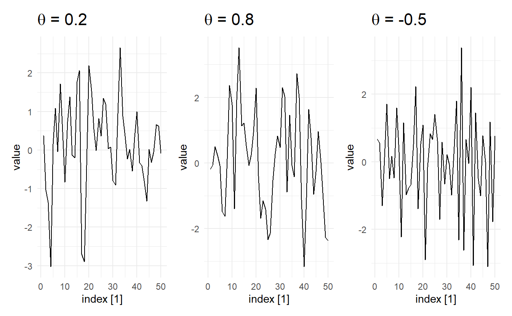
9.4.2 Decision of order q
The derivation of the ACF function has shed light on how we would decide the order \(q\). For a MA(2) process, ACF would be 0 for \(k = 3, 4, \dots\). In general, for a MA(q) process, ACF will be nonzero for \(k = 1, 2, \dots,q\) and zero after \(q\).
Let’s prove this, a MA(q) model can be written as: \[ y_{t-k} = c + \theta_1\varepsilon_{t-k -1} + \theta_2\varepsilon_{t- k - 2} + \dots + \theta_q\varepsilon_{t-k -q} + \varepsilon_{t-q} \] To see at which point ACF will be zero, consider the covariance (if covariance between \(y_t\) and \(y_{t-k}\) is zero, then \(r_k\) is zero) \[ \text{Cov}(y_t, y_{t-k}) = \text{E}(y_ty_{t-k}) - \text{E}(y_t)\text{E}(y_{t-k}) \]
We know that \(\text{E}(y_t)\text{E}(y_{t-k}) = c^2\). So the problem is, what is included in \(E(y_ty_{t-k})\), and when will it be \(c^2\), so that the covariance would be zero?
Follow MA(q), \(y_t\) includes \((c, \varepsilon_t, \varepsilon_{t-1}, \varepsilon_{t-2}, \dots, \varepsilon_{t-q})\), and \(y_{t-k}\) includes \((c, \varepsilon_{t-k}, \varepsilon_{t-k -1}, \varepsilon_{t-k -2}, \dots, \varepsilon_{t - k -q})\). When they are multiplied together, there will be
\[ \begin{aligned} \text{constant} &: c^2 \rightarrow E(c^2) = c^2 \\ \text{cross terms} &: \varepsilon_i\varepsilon_j, i \not= j \rightarrow E(\varepsilon_i\varepsilon_j) = 0 \\ \text{square terms} &: \varepsilon_i^2 \rightarrow E(\varepsilon_i^2) = \text{Var}(\varepsilon_i) + \text{E}(\varepsilon_i)^2 = \sigma^2 > 0 \end{aligned} \] Now everything is clear, ACF will be zero, if and only if there is no square term. That is to say, there is no same error term when we decompose \(y_t\) and \(y_{t-k}\). This means the earliest error in \((\varepsilon_t, \varepsilon_{t-1}, \varepsilon_{t-2}, \dots, \varepsilon_{t-q})\) is still earlier than the latest error term in of \((\varepsilon_{t-k}, \varepsilon_{t-k -1}, \varepsilon_{t-k -2}, \dots, \varepsilon_{t - k -q})\)
\[ \begin{aligned} t - q &> t - k \\ k &> q \end{aligned} \]
Now that we have proved that when \(k > q\), ACF would be zero and otherwise non-zero. So, a sample ACF with significant autocorrelations at lag 1 to lag q, but non-significant autocorrelations for after q indicates a possible MA(q) model(i.e., an ACF plot that cuts off at lag q).
Another characteristic of a MA(q) process is that their PACF tails off toward zero very slowly, in contrast to AR(p) whose ACF plot has a long tail.
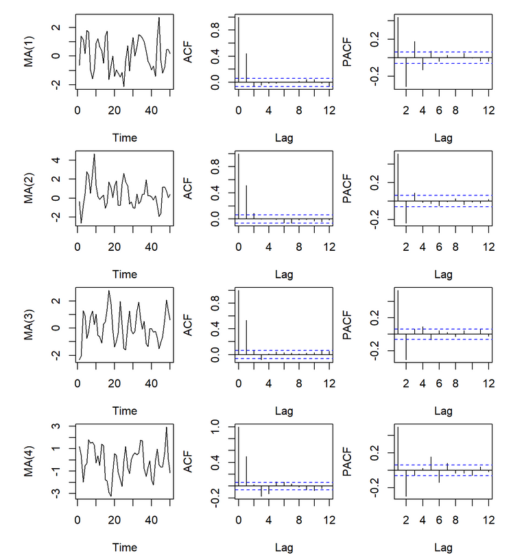

9.4.3 Koyck transformation and Invertibility
Koyck transformation is one that converts a AR(p) model to MA(\(\infty\)) model . Take an AR(1) model for example, which can be written as
\[ \begin{aligned} (1 - \phi_1B)y_t &= \varepsilon_t + c \\ y_t &= \frac{\varepsilon_t + c}{1 - \phi_1B} \end{aligned} \]
Recall that the infinite sum of a geometric series is
\[ \begin{aligned} s &= a + ar + ar^2 + \cdots \\ &= \frac{a}{1 - r} \quad (|r| < 1) \end{aligned} \]
It follows that we can rewritten our formula as (backshift operator on a constant is still that constant, so \(|\phi_1| < 1\) ):
\[ \begin{aligned} y_t &= (\varepsilon_t + c) + (\varepsilon_t + c)\phi_1B + (\varepsilon_t + c)(\phi_1B)^2 + \cdots \\ &= \varepsilon_t + (c + \phi_1c + \phi_1^2c + \dots) + (\phi_1\varepsilon_{t-1} + \phi_1^2\varepsilon_{t-2} + \cdots) \end{aligned} \]
For a AR(1) model, we have \(|\phi_1| < 1\). so that \((c + \phi_1c + \phi_1^2c + c\dots)\) will converge to a constant. And what we derived is exactly a MA(\(\infty\)) model.
This transformation is also a special case of the Wold Decomposition. Since when AR(1) when \(|\phi_1| < 1\) is covariance stationary, and \(\text{E}(y_t) = c + \phi_1c + \phi_1^2c + \dots\). If we substract the mean from the RHS then the equation is Equation (9.1)
Invertibility is like the opposite of Koyck transformation. It describes the fact that it is possible to write any stationary MA(\(\infty\)) model as a AR(p) model. Again, we demonstrate this with an MA(1) model (here I put a negative sign on \(\theta_1\) just for convenience):
\[ \begin{aligned} y_t &= c - \theta_1\varepsilon_{t-1} + \varepsilon_t \\ y_t &= (1 - \theta_1B)\varepsilon_t + c\\ \varepsilon_t &= \frac{y_t - c}{1 - \theta_1B} \end{aligned} \] The rest is the same, \(\frac{y_t - c}{1 - \theta_1B}\) can be considered as the infinite sum of a geometric series, when \(|\theta_1| < 1\). And the final equation is
\[ y_t = (c + \theta_1c + \theta_1^2c + \cdots) + (\theta_1y_{t-1} + \theta_1^2y_{t-2} + \cdots) + \varepsilon_t \] With \(|\theta_1| < 1\), \((c + \theta_1c + \theta_1^2c + \cdots)\) will converge to a constant and the equation qualifies for a AR(\(\infty\)) model. Thus, when \(|\theta_1| < 1\) the MA model is invertible. (From another perspective, if \(|\theta_1| > 1\) \(\phi_1, ... ,\phi_p\) in MA(\(\infty\)) model will not met stationary conditions).
Although we no longer need to place constraints on MA models like we did on AR models since it is always stationary, we do hope that MA models are invertible, because only when an MA(q) process is invertible can it be uniquely identified. Consider, for example, the following case in which we know that for a MA(1) model \(\gamma(1) = r_1\), and the way we would compute \(\theta_1\):
\[ \frac{\theta}{1 + \theta^2} = r_1 \\ (1 + \theta^2)r_1 - \theta = 0 \\ \theta^2 + \frac{1}{r_1}\theta + 1 = 0 \]
The equation has the following two roots:
\[ \theta_{1,2} = -\frac{1}{2r}(1 \pm \sqrt{1 - 4r_1^2}) \]
Because \(|r_1| = |\frac{\theta_1}{1 + \theta_1^2}| < 1/2\) the quadratic equation always results in real roots. They also have the property that \(\theta_1\theta_2 = 1\) (Vieta theorem). This gives us the possibility to model the same autocorrelation structure with two different parameters, where one is the inverse of the other.
n order to get a unique parameterisation, we require a further property of the MA(1) process. We ask under which conditions the MA(1) process can have an autoregressive representation. And we already know that this is true when \(|\theta| < 1\), and this condition also helps us to choose between \(\theta_1\) and \(\theta_2\), so that unique model is identified.
For higher order models, given \(\gamma(1), \gamma(2), \dots, \gamma(q)\) (we already proved that when k > q \(\gamma(k) = 0\)), we would still have multiple solution set \(\theta_1, \theta_2, \dots, \theta_q\). To get a unique parameterisation, the invertibility condition is again required, i.e. it must be possible to represent the MA(q) process as a stationary AR(p) process. The condition for order q, similar to AR(p), is that all roots of
\[ 1 + \theta_1B + \theta_2B^2 + \dots + \theta_qB^q = 0 \]
are larger than one in absolute value.
9.5 ARMA models
In the following, we introduce processes which contain both an autoregressive (AR) term of finite order p and a moving average (MA) term of finite order q. Hence, these mixed processes are denoted as ARMA(p, q) processes. They enable us to describe processes in which neither the autocorrelation nor the partial autocorrelation function breaks off after a finite number of lags. Again, we start with the simplest case, the ARMA(1, 1) process.
An ARMA(1, 1) process can be written as follows (Note the negative sign before \(\theta_1\))
\[ y_t = c + \phi_1y_{t-1} - \theta_1\varepsilon_{t-1} + \varepsilon_t \] using the backshift notation
\[ (1 - \phi_1B)y_t = c + (1 - \theta_1B)\varepsilon_t \] where \(\varepsilon_t\) comes from pure random process. To get the Wold representation of an ARMA(1, 1) process, we solve the equation below for \(y_t\)
\[\begin{equation} \tag{9.2} y_t = \frac{c}{1 - \phi_1B} + \frac{1 - \theta_1B}{1 - \phi_1B}\varepsilon_t \end{equation}\]
It is obvious that \(\phi_1 \not= \theta_1\) must hold, because otherwise \(y_t\) would be a pure random process fluctuating around the mean \(\mu = c/(1 – \phi_1B)\).
Recall the Wold Decomposition in Equation (9.1). The \(\phi_i,i = 0, 1, 2, ...\), can be determined as follows:
\[ \begin{aligned} \frac{1 - \theta_1B}{1 - \phi_1B} &= \psi_0 + \psi_1B + \psi_2B^2 + \psi_3B^2 + \cdots \\ 1 - \theta_1B &= (1 - \phi_1B)( \psi_0 + \psi_1B + \psi_2B^2 + \psi_3B^2 + \cdots) \\ 1 - \theta_1B &= \psi_0 + \psi_1B + \psi_2B^2 + \psi_3B^2 +\cdots - \phi_1\psi_0B - \phi_1\psi_1B^2 - \phi_1\psi_2B^3 - \cdots \end{aligned} \]
Comparing the coefficients of the two lag polynomials we get
\[ \begin{aligned} B^0&: \psi_0 = 1 \\ B^1&: \psi_1 - \phi_1\psi_0 = \theta_1 \Rightarrow \psi_1 = \phi_1 - \theta_1 \\ B^2&: \psi_2 - \phi_1\psi_1 = 0 \Rightarrow \psi_2 = \phi_1(\phi_1 - \theta_1) \\ B^3&: \psi_3 - \phi_1\psi_2= 0 \Rightarrow \psi_3 = \phi_1^2(\phi_1 - \theta_1) \\ & \vdots \\ B^i&: \psi_i - \phi_1\psi_{i-1} = 0 \Rightarrow \psi_i = \phi_1^{i-1}(\phi_1 - \theta_1)^2 \end{aligned} \]
Note that the Wold Decomposition also requires \(\sum_{i-0}^{\infty}\psi_i^2 < \infty\) (this is in the mean function), and this can be only satisfied when \(|\phi_1| < 1\). This corresponds to the stability condition of the AR term.
Thus, the ARMA(1, 1) process is stationary if, with stochastic initial conditions, it has a stable AR(1) term. The Wold representation is
\[ y_t = \frac{c}{1 - \phi_1} + \varepsilon_t + (\phi_1 - \theta_1)\varepsilon_{t-1} + \phi_1(\phi_1 - \theta_1)\varepsilon_{t-2} + \phi_1^2(\phi_1 - \theta_1)\varepsilon_{t-3} \]
Thus, the ARMA(1, 1) process can be written as an MA(\(\infty\)) process.
To invert the MA(1) part, \(|\theta_1| < 1\) must hold. From Equation (9.2) we know:
\[ \varepsilon_t = \frac{-c}{1 - \theta_1} + \frac{1 - \phi_1B}{1 - \theta_1B}y_t \]
If \(1/(1 – \theta_1B)\) is developed into a geometric series we get
\[ \begin{aligned} \varepsilon_t &= \frac{-c}{1 + \theta_1} + (1 - \phi_1B)(1 + \theta_1B + \theta_1^2B^2 + \cdots)y_t \\ &= \frac{-c}{1 + \theta_1} + y_t + (\theta_1 - \phi_1)y_{t-1} + \theta_1(\theta_1 - \phi_1)y_{t-2} + \theta_1^2(\theta_1 - \phi_1)y_{t-3} + \cdots \end{aligned} \] This proves to be an AR(\(\infty\)) representation. It shows that the combination of an AR(1) and an MA(1) term leads to a process with both MA(\(\infty\)) and AR(\(\infty\)) representation if the AR term is stable and the MA term invertible.
More generally, ARMA(p, q) is staionary and invertible if the AR term is stationary and the MA term invertible (all complex roots of \(\Phi(B)\) and that of \(\Theta(B)\) exceeds 1 in absolute value, Section @ref(plotting-the-characteristic-roots introduces gg_arma() to visualized characteristic roots)). It can either be represented as an AR(\(\infty\)) or as an MA(\(\infty\)) process. Thus, neither its autocorrelation nor its partial autocorrelation function breaks off. In short, it is possible to generate stationary stochastic processes with infinite AR and MA orders by using only a finite number of parameters.
It can be proved that an stationary ARMA(1, 1) has the following properties:
\[ \begin{aligned} \text{E}(y_t) &= \frac{c}{1 - \phi_1} \\ \text{Var}(y_t) = \gamma(0) &= \frac{1 + \theta_1^2 - 2\phi_1\theta_1}{1 - \alpha^2}\sigma^2 \\ \text{Cov}(y_t, y_{t+k}) = \gamma(k) &= \phi_1\gamma(k-1) \end{aligned} \]
We also know that \(r_1\), (the initial value of \(r_k\))
\[ r_1 = \frac{(\phi_1 - \theta_1)(1 - \phi_1\theta_1)}{1 + \theta_1^2 - 2\phi_1\theta_1} \]
If the process is stable and invertible, i.e. for \(|\phi_1| < 1\) and \(|\theta_1| < 1\), the sign of \(r_k\) is determined by the sign of \((\phi_1 - \theta_1)\) because of\((1 + \theta_1^2 -2\phi_1 \theta_1) = (\theta_1 - \phi_1)^2 + 1 - \phi_1^2 > 0\) and \((1 – \phi_1\theta_1) > 0\). Moreover, it follows from \(\gamma(k)\) that the autocorrelation function – as in the AR(1) process – is monotonic for \(\phi_1 > 0\) and oscillating for \(\phi_1 < 0\). Due to \(|\phi_1| < 1\) with \(k\) increasing, the autocorrelation function also decreases in absolute value.
Thus, the following typical autocorrelation structures are possible:
\(\phi_1 > 0\) and \(\phi_1 > \theta_1\): The autocorrelation function is always positive.
\(\phi_1 < 0\) and \(\phi_1 < \theta_1\): The autocorrelation function oscillates; the initial condition \(r_1\) is negative.
\(\phi_1 > 0\) and \(\phi_1 < \theta_1\): The autocorrelation function is negative from \(r_1\) onwards.
\(\phi_1 < 0\) and \(\phi_1 > \theta_1\): The autocorrelation function oscillates; the initial condition \(r_1\) is positive.
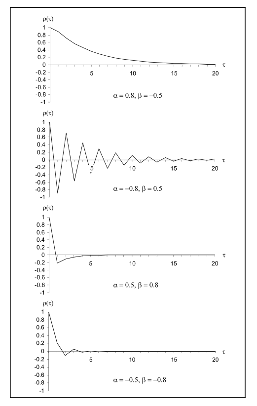
9.5.1 Three representations of an ARMA model
This is a supplementary section elaborating on the details among the relationship between ARMA, AR, and MA models.
For a stationary ARMA(p, q) model:
\[ (1 - \phi_1 B - \cdots - \phi_p B^p)y_t = c + (1 + \theta_1 B + \cdots +\theta_q B^q)\varepsilon_t \]
For the AR and MA representations, we use long division of two polynomials. Given two polynomials \(\Phi(B) = 1 - \sum_{i=1}^{p}\phi_iB^i\) and \(\Theta(B) = 1 - \sum_{i=1}^{q}\theta_iB^i\) we can obtain, by long division, that the following results take form of
\[ \frac{\Theta(B)}{\Phi(B)} = 1 + \psi_1 B + \psi_2 B^2 + \cdots \equiv \Psi(B) \tag{1} \]
and
\[ \frac{\Phi(B)}{\Theta(B)}= 1 - \pi_1 B - \pi_2 B ^2 - \cdots \equiv \Pi(B) \tag{2} \]
9.5.1.1 AR representation
From Eq (2), the ARMA(p, q) model can be written as
\[ \frac{\Phi(B)}{\Theta(B)}y_t = c + \varepsilon_t \] So
\[ y_t = c + \pi_1y_{t-1} + \pi_2y_{t-2} + \pi_3y_{t-3} + \cdots + \varepsilon_t \]
9.5.1.2 MA representation
From Eq(1), the ARMA(p, q) model can be written as
\[ y_t = \frac{c}{\Phi(B)} + \frac{\Theta(B)}{\Phi(B)}\varepsilon_t \] So
\[ y_t = \frac{c}{\Phi(B)} + \psi_1\varepsilon_{t-1} + \psi_2\varepsilon_{t-2} + \cdots + \varepsilon_{t} \]
Many textbooks and software programs define the model with negative signs before the \(\theta\) terms (R uses positive signs). This doesn’t change the general theoretical properties of the model, although it does flip the algebraic signs of estimated coefficient values and (unsquared) \(\theta\) terms in formulas for ACFs and variances↩︎